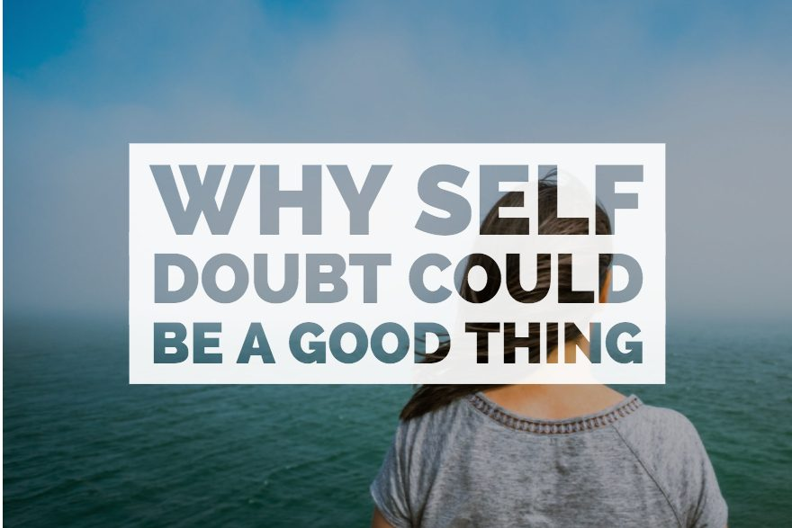

“You have to believe in yourself!” is what I heard from my father as I was heading for my first big audition. I had a number pinned to myself so that the judges could call out “number 23, next, number 31, thank you, you’re done” instead of calling out our names. I was already very nervous and never wanted to come here and the judges calling out our assigned numbers was only making it worse. As soon as self-belief came into the equation, amid practical reminders to look the judges in the eye, not fidget, and not look down, my stomach dropped. If this was a game of believing in myself, I had already lost.
Believing in myself always felt like one more thing I could fail at. Through my teen, I have always been hearing pep talks from my friends and family, who reminded me that the first step towards doing anything is “believing I can do it.” It has seemed to pop up in phrases everywhere, be it Instagram posts or Pinterest motivational boards. It was like the most popular person at the party, who made me think that the only thing between me and my dreams was self-confidence.
Self-doubt is usually considered as a monster, something which I need to get rid of as soon as possible. But the further I paddle through life and think more about it, it might be that very monster that helps me to keep going. As much as self-belief helps us get through the hurdles in life, self-doubt has the power too – to help us move from one chapter to the other with self-awareness. If self-doubt is not accurate, then it is detrimental but at the same time, if you’re not experiencing any doubts, you probably aren’t doing much to push yourself.
The unpleasant truth is that, had I waited for self-confidence to kick in, I wouldn’t have done anything. I would be waiting and uncertain about colleges not fit for me; shy first messages which would turn into unforgettable friendships; moving to cities where I knew no one, but wanted everything. With doubt, I need no guarantees that success would come looking for me. To me, self-confidence meant being sure, and me, I was never sure. I just wanted to try.
Doubt has made me brave. It has made me believe that either I could do things despite doubting myself, or I could not do them at all – because the confidence I’d been told I needed was not coming or has yet to come. Ours is a society overflowing with confidence and even then we require constant reminders about our limitless capacity and that we can do anything, if and only if we believe.
Today I look at myself and instead of seeing a little boy who didn’t know how to believe in himself, I see a young man, who doubts but decides to step forward anyway. And that approach I think is something worth believing in.
- Published 22nd May, 2019
- Categorized as Inspirational
Are you really mean, or is it just the world around you that thinks you are?
“Mean” is definitely an interesting label to identify someone. Without giving it a second thought, how quickly do we label a person as mean? But have we ever thought that this label can imply almost anything? Surely some people totally deserve this title, owing to their actions and behavior towards everyone. They can be seen constantly bullying and teasing their friends and everyone around them. Their actions are solely channeled in their own interest, no matter the repercussions. They repeatedly lie, cheat and steal (not just physically). These are the ones who genuinely deserve this intricate label.
But then there is the other category of mean people. These are the ones who have been carved and sculpted the way they are by the genuine cruelty of this world. The ones who stop letting anyone and everyone take advantage of them. Those who envy small talks. The ones who actually say what they’re thinking, maybe with a mild filter. The ones who appreciate justice and hold others accountable. Do you really think they deserve to be labeled “mean”?
It is also amusing how some of us cater to words like nice and mean. Their definitions often resemble the skin and not the substance lying within. People think being nice to you entitles them to your soul, your patience, your forgiveness, your second and third chances, even if they don’t deserve any of that. And if you fail to provide them with any of those things, guess who turns out to be the “mean” and “egoistic” one? Ironic, I must say!
Another thing that keeps hammering my head is that you’re called cynical and pessimistic for your candor, usually by the ones who always claim to be happy and positive. But if they are actually so happy, you wonder why are they so agitated by you and your thoughts. What I believe is that the people who like and admire you will never have a problem with your personality. They will never fail to support you to become a better version of yourself and at the same time call you out when you make mistakes. You can always count on them for staying by your side through thick and thin. So what about those who don’t? Well, they will call you mean, selfish and all sorts of names. They will talk behind your back, trying to undermine your reputation and take away your dignity. Shoot. Let them. The ones who know you in and out, won’t ever have second thoughts about the kind of person you are.
What I mean to say is that someone out there will always dislike you no matter what you do. Of course, you can’t make everyone happy, you’re not pizza😆. So even if you are a little mean, don’t worry. Somewhere or the other all of us are! I think it is a proviso for the kind of person you’re meant (or should I say “supposed”) to be. After all, not everyone thinks you’re mean, just the predators. The ones who wanted to prey on your grace, who thought you were going to let them get away with all kinds of crap. Notice their disappointment when you deny them these perks and remember to pity them, but only a small amount.
And now back to square one, I just want you to ask yourself this one question, are you really mean, or is it just the world around you that thinks you are?
- Published 9th June, 2019
- Categorized as Inspirational